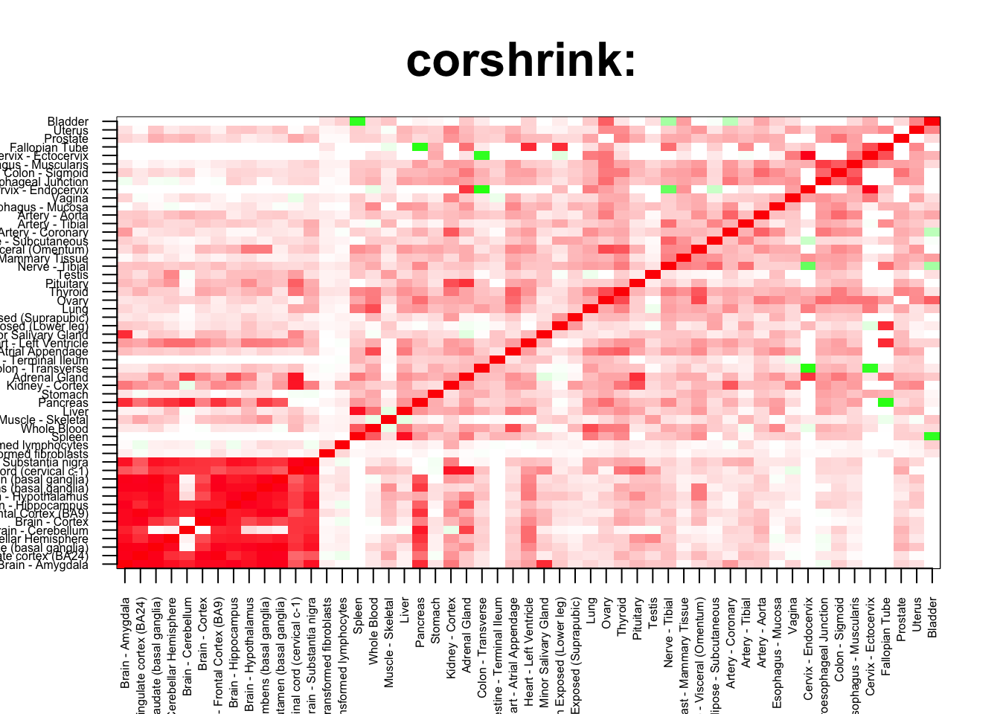
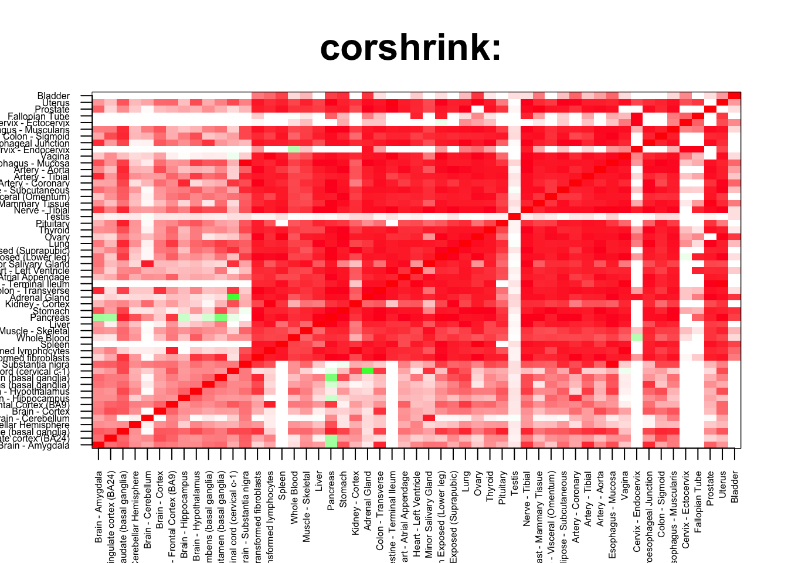

corshrink_data <- get(load("../output/genewide_ash_out_tissue_mat.rda"))
cor_data <- get(load("../output/cor_tissues_non_ash_voom_pearson.rda"))common_samples <- get(load("../output/common_samples.rda"))
tissue_labels <- read.table(file = "../data/GTEX_V6/samples_id.txt")[,3]
#library(data.table)
#data <- data.frame(fread("../data/GTEX_V6/cis_gene_expression.txt"))
#matdata <- t(data[,-c(1,2)])
gene_names <- as.character(read.table(file = "../data/GTEX_V6/gene_names_GTEX_V6.txt")[,1])
gene_names_1 <- as.character(sapply(gene_names, function(x) return(strsplit(x, "[.]")[[1]][1])))
U <- unique(tissue_labels)tab <- array(0, dim(corshrink_data)[3])
for(m in 1:dim(corshrink_data)[3]){
temp <- corshrink_data[order_index[1:13], order_index[(1:13)],m]
temp1 <- corshrink_data[order_index[-(1:13)], order_index[-(1:13)],m]
tab[m] <- median(temp[row(temp) > col(temp)]) - median(temp1[row(temp1) > col(temp1)])
}
ordering_high <- order(tab, decreasing = TRUE)[1:1000]
ordering_low <- order(tab, decreasing = FALSE)[1:1000]top_gene <- gene_names_1[ordering_high[1]]
col=c(rev(rgb(seq(1,0,length=1000),1,seq(1,0,length=1000))),
rgb(1,seq(1,0,length=1000),seq(1,0,length=1000)))
image(as.matrix(corshrink_data[order_index,order_index, ordering_high[1]]),
col=col, main=paste0("corshrink: "), cex.main=2,
xaxt = "n", yaxt = "n", zlim=c(-1,1))
axis(1, at = seq(0, 1, length.out = 53), labels = U[order_index], las=2, cex.axis = 0.5)
axis(2, at = seq(0, 1, length.out = 53), labels = U[order_index], las=2, cex.axis = 0.5)
bottom_gene <- gene_names_1[ordering_low[1]]
col=c(rev(rgb(seq(1,0,length=1000),1,seq(1,0,length=1000))),
rgb(1,seq(1,0,length=1000),seq(1,0,length=1000)))
image(as.matrix(corshrink_data[order_index,order_index, ordering_low[1]]),
col=col, main=paste0("corshrink: "), cex.main=2,
xaxt = "n", yaxt = "n", zlim=c(-1,1))
axis(1, at = seq(0, 1, length.out = 53), labels = U[order_index], las=2, cex.axis = 0.5)
axis(2, at = seq(0, 1, length.out = 53), labels = U[order_index], las=2, cex.axis = 0.5)
high_brain_nonbrain_2_genes <- gene_names_1[ordering_high]
low_brain_nonbrain_2_genes <- gene_names_1[ordering_low]
write.table(cbind.data.frame(high_brain_nonbrain_2_genes), quote = FALSE, file = "../utilities/brain_nonbrain_2/high_brain_nonbrain_2.txt", row.names = FALSE, col.names = FALSE)
write.table(cbind.data.frame(low_brain_nonbrain_2_genes), quote = FALSE, file = "../utilities/brain_nonbrain_2/low_brain_nonbrain_2.txt", row.names = FALSE, col.names = FALSE)tab <- read.delim("../utilities/brain_nonbrain_2/pathway_high.tab")
head(cbind.data.frame(tab$pathway, tab$q.value), 100)## tab$pathway
## 1 Validated transcriptional targets of AP1 family members Fra1 and Fra2
## 2 Spinal Cord Injury
## 3 TNF signaling pathway - Homo sapiens (human)
## 4 VEGFA-VEGFR2 Signaling Pathway
## 5 Neutrophil degranulation
## 6 Legionellosis - Homo sapiens (human)
## 7 Immune System
## 8 Osteoclast differentiation - Homo sapiens (human)
## 9 Innate Immune System
## 10 Direct p53 effectors
## 11 AP-1 transcription factor network
## 12 Tacrolimus/Cyclosporine Pathway, Pharmacodynamics
## 13 Folate Metabolism
## 14 Complement and Coagulation Cascades
## 15 Apoptosis Modulation and Signaling
## 16 Apoptosis Modulation and Signaling
## 17 Apoptosis Modulation and Signaling
## 18 Dengue-2 Interactions with Complement and Coagulation Cascades
## 19 Pertussis - Homo sapiens (human)
## 20 Apoptosis - Homo sapiens (human)
## 21 Senescence and Autophagy in Cancer
## 22 Photodynamic therapy-induced NF-kB survival signaling
## 23 Vitamin B12 Metabolism
## 24 EGFR1
## 25 TYROBP Causal Network
## 26 Oncostatin_M
## 27 ATF6-alpha activates chaperone genes
## 28 Complement and coagulation cascades - Homo sapiens (human)
## 29 MAPK Signaling Pathway
## 30 IL6-mediated signaling events
## 31 Binding and Uptake of Ligands by Scavenger Receptors
## 32 Photodynamic therapy-induced unfolded protein response
## 33 Hepatitis C and Hepatocellular Carcinoma
## 34 TGF_beta_Receptor
## 35 TGF-beta Signaling Pathway
## 36 NF-kappa B signaling pathway - Homo sapiens (human)
## 37 Attenuation phase
## 38 Nuclear Receptors Meta-Pathway
## 39 HSF1 activation
## 40 MAPK signaling pathway - Homo sapiens (human)
## 41 Glucocorticoid receptor regulatory network
## 42 Leishmaniasis - Homo sapiens (human)
## 43 Staphylococcus aureus infection - Homo sapiens (human)
## 44 AGE-RAGE signaling pathway in diabetic complications - Homo sapiens (human)
## 45 Microglia Pathogen Phagocytosis Pathway
## 46 Human Complement System
## 47 Selenium Micronutrient Network
## 48 Oncostatin M Signaling Pathway
## 49 Transcriptional misregulation in cancer - Homo sapiens (human)
## 50 Antigen processing-Cross presentation
## 51 Photodynamic therapy-induced AP-1 survival signaling.
## 52 ATF4 activates genes
## 53 TP53 Regulates Transcription of Cell Death Genes
## 54 Influenza A - Homo sapiens (human)
## 55 Glucocorticoid Receptor Pathway
## 56 Phagosome - Homo sapiens (human)
## 57 DNA Damage Response (only ATM dependent)
## 58 Cellular response to heat stress
## 59 Apoptosis-related network due to altered Notch3 in ovarian cancer
## 60 HSF1-dependent transactivation
## 61 Regulation of HSF1-mediated heat shock response
## 62 TP53 Regulates Transcription of Death Receptors and Ligands
## 63 signal transduction through il1r
## 64 MyD88:Mal cascade initiated on plasma membrane
## 65 Toll Like Receptor TLR1:TLR2 Cascade
## 66 Toll Like Receptor TLR6:TLR2 Cascade
## 67 Toll Like Receptor 2 (TLR2) Cascade
## 68 Cellular responses to stress
## 69 IL1 and megakaryocytes in obesity
## 70 TNF alpha Signaling Pathway
## 71 Chagas disease (American trypanosomiasis) - Homo sapiens (human)
## 72 IL6
## 73 Apoptosis
## 74 Apoptotic Signaling Pathway
## 75 Herpes simplex infection - Homo sapiens (human)
## 76 Oxidative Damage
## 77 Malaria - Homo sapiens (human)
## 78 HIF-1-alpha transcription factor network
## 79 Toll-Like Receptors Cascades
## 80 DNA Damage Response
## 81 Insulin resistance - Homo sapiens (human)
## 82 classical complement pathway
## 83 p53 signaling pathway - Homo sapiens (human)
## 84 NOD-like receptor signaling pathway - Homo sapiens (human)
## 85 ATF-2 transcription factor network
## 86 Vitamin D Receptor Pathway
## 87 TP53 Regulates Transcription of Cell Death Genes
## 88 Corticotropin-releasing hormone signaling pathway
## 89 Photodynamic therapy-induced HIF-1 survival signaling
## 90 toll-like receptor pathway
## 91 HIF-1 signaling pathway - Homo sapiens (human)
## 92 Mammary gland development pathway - Involution (Stage 4 of 4)
## 93 Zinc homeostasis
## 94 Cytokine-cytokine receptor interaction - Homo sapiens (human)
## 95 Lung fibrosis
## 96 Validated targets of C-MYC transcriptional repression
## 97 IL-1 signaling pathway
## 98 Regulation of TLR by endogenous ligand
## 99 Salmonella infection - Homo sapiens (human)
## 100 Senescence-Associated Secretory Phenotype (SASP)
## tab$q.value
## 1 1.614356e-09
## 2 1.808019e-08
## 3 1.808019e-08
## 4 9.839598e-08
## 5 1.074452e-07
## 6 2.829925e-07
## 7 3.388047e-07
## 8 3.388047e-07
## 9 3.508104e-07
## 10 4.975148e-07
## 11 1.693552e-06
## 12 2.847688e-06
## 13 2.847688e-06
## 14 2.872550e-06
## 15 2.872550e-06
## 16 2.872550e-06
## 17 2.872550e-06
## 18 3.110280e-06
## 19 3.110280e-06
## 20 3.110280e-06
## 21 4.913943e-06
## 22 6.434474e-06
## 23 1.211904e-05
## 24 1.457079e-05
## 25 1.553225e-05
## 26 2.115013e-05
## 27 2.237490e-05
## 28 2.237490e-05
## 29 2.237490e-05
## 30 2.352661e-05
## 31 2.391154e-05
## 32 2.391154e-05
## 33 3.633637e-05
## 34 3.834796e-05
## 35 4.073129e-05
## 36 4.241120e-05
## 37 4.475578e-05
## 38 8.190969e-05
## 39 8.570668e-05
## 40 9.551967e-05
## 41 1.137426e-04
## 42 1.137426e-04
## 43 1.162154e-04
## 44 1.214191e-04
## 45 1.306758e-04
## 46 1.306758e-04
## 47 1.394741e-04
## 48 1.414469e-04
## 49 1.527133e-04
## 50 1.624410e-04
## 51 1.999749e-04
## 52 2.294552e-04
## 53 2.958987e-04
## 54 2.958987e-04
## 55 3.090200e-04
## 56 3.130333e-04
## 57 3.263478e-04
## 58 3.301816e-04
## 59 3.301816e-04
## 60 3.315751e-04
## 61 3.575690e-04
## 62 3.575690e-04
## 63 3.894529e-04
## 64 3.894529e-04
## 65 3.894529e-04
## 66 3.894529e-04
## 67 3.894529e-04
## 68 4.079941e-04
## 69 4.079941e-04
## 70 4.293979e-04
## 71 4.666221e-04
## 72 5.412162e-04
## 73 5.435889e-04
## 74 5.435889e-04
## 75 5.495459e-04
## 76 5.546915e-04
## 77 6.378556e-04
## 78 6.378556e-04
## 79 7.216248e-04
## 80 7.337204e-04
## 81 7.665187e-04
## 82 8.048013e-04
## 83 8.315084e-04
## 84 1.013036e-03
## 85 1.030428e-03
## 86 1.170782e-03
## 87 1.179734e-03
## 88 1.197033e-03
## 89 1.205470e-03
## 90 1.205470e-03
## 91 1.213683e-03
## 92 1.368697e-03
## 93 1.472797e-03
## 94 1.508673e-03
## 95 1.511517e-03
## 96 1.540581e-03
## 97 1.587371e-03
## 98 1.645075e-03
## 99 1.667423e-03
## 100 1.691084e-03tab <- read.delim("../utilities/brain_nonbrain_2/GO_high.tab")
head(cbind.data.frame(tab$term_name, tab$q.value), 100)## tab$term_name
## 1 response to stress
## 2 cell death
## 3 response to organic substance
## 4 positive regulation of biological process
## 5 programmed cell death
## 6 apoptotic process
## 7 immune response
## 8 cellular response to chemical stimulus
## 9 membrane-bounded organelle
## 10 protein binding
## 11 regulation of response to stimulus
## 12 positive regulation of cellular process
## 13 apoptotic signaling pathway
## 14 regulation of cell death
## 15 response to external stimulus
## 16 regulation of response to stress
## 17 negative regulation of biological process
## 18 defense response
## 19 positive regulation of response to stimulus
## 20 response to abiotic stimulus
## 21 response to cytokine
## 22 regulation of programmed cell death
## 23 response to chemical
## 24 response to biotic stimulus
## 25 response to inorganic substance
## 26 response to external biotic stimulus
## 27 response to other organism
## 28 inflammatory response
## 29 cellular response to organic substance
## 30 regulation of protein metabolic process
## 31 intracellular membrane-bounded organelle
## 32 cellular response to stress
## 33 positive regulation of cellular metabolic process
## 34 response to lipopolysaccharide
## 35 response to molecule of bacterial origin
## 36 response to temperature stimulus
## 37 immune effector process
## 38 regulation of angiogenesis
## 39 positive regulation of metabolic process
## 40 regulation of immune system process
## 41 regulation of cellular protein metabolic process
## 42 vesicle
## 43 cytoplasmic part
## 44 intrinsic apoptotic signaling pathway
## 45 negative regulation of cellular process
## 46 extracellular exosome
## 47 regulation of vasculature development
## 48 positive regulation of immune system process
## 49 extracellular vesicle
## 50 extracellular organelle
## 51 regulation of cellular metabolic process
## 52 cytokine production
## 53 positive regulation of macromolecule metabolic process
## 54 regulation of cytokine production
## 55 cell proliferation
## 56 angiogenesis
## 57 regulation of primary metabolic process
## 58 response to oxidative stress
## 59 regulation of metabolic process
## 60 regulation of macromolecule metabolic process
## 61 response to bacterium
## 62 negative regulation of cell death
## 63 cellular response to cytokine stimulus
## 64 regulation of signal transduction
## 65 response to reactive oxygen species
## 66 cytoplasm
## 67 response to heat
## 68 immune system development
## 69 chaperone binding
## 70 blood vessel development
## 71 organic substance metabolic process
## 72 extrinsic apoptotic signaling pathway
## 73 blood vessel morphogenesis
## 74 response to lipid
## 75 regulation of cell proliferation
## 76 cellular response to external stimulus
## 77 tumor necrosis factor production
## 78 regulation of apoptotic signaling pathway
## 79 cellular metabolic process
## 80 regulation of tumor necrosis factor superfamily cytokine production
## 81 regulation of defense response
## 82 intracellular signal transduction
## 83 intracellular part
## 84 intrinsic apoptotic signaling pathway in response to DNA damage
## 85 vasculature development
## 86 cellular response to stimulus
## 87 response to topologically incorrect protein
## 88 response to unfolded protein
## 89 tumor necrosis factor superfamily cytokine production
## 90 response to metal ion
## 91 cardiovascular system development
## 92 regulation of biological process
## 93 positive regulation of cell death
## 94 positive regulation of signal transduction
## 95 hematopoietic or lymphoid organ development
## 96 hemopoiesis
## 97 regulation of phosphorus metabolic process
## 98 primary metabolic process
## 99 regulation of intracellular signal transduction
## 100 unfolded protein binding
## tab$q.value
## 1 1.402362e-29
## 2 1.831804e-20
## 3 2.076331e-19
## 4 8.110051e-18
## 5 6.004719e-17
## 6 9.059354e-17
## 7 6.907448e-18
## 8 2.393515e-17
## 9 2.073730e-17
## 10 1.771591e-17
## 11 4.233424e-17
## 12 4.622880e-16
## 13 1.083312e-16
## 14 5.392861e-16
## 15 1.293099e-16
## 16 9.176956e-16
## 17 4.766869e-16
## 18 1.459194e-15
## 19 4.753902e-15
## 20 1.434410e-15
## 21 1.126264e-14
## 22 3.162866e-14
## 23 2.485713e-15
## 24 2.485713e-15
## 25 1.301537e-14
## 26 2.966318e-14
## 27 8.123457e-14
## 28 8.912469e-14
## 29 1.349731e-13
## 30 5.504065e-13
## 31 3.378642e-13
## 32 2.058808e-13
## 33 2.392096e-12
## 34 1.209215e-12
## 35 1.542618e-12
## 36 7.378502e-13
## 37 4.895103e-13
## 38 7.112063e-12
## 39 4.563882e-12
## 40 2.865301e-12
## 41 1.188753e-11
## 42 5.083717e-12
## 43 5.083717e-12
## 44 1.139450e-11
## 45 1.314722e-11
## 46 3.125970e-11
## 47 2.989878e-11
## 48 2.177939e-11
## 49 1.311394e-11
## 50 1.594128e-11
## 51 2.303398e-11
## 52 1.943300e-11
## 53 7.683445e-11
## 54 5.440929e-11
## 55 1.288999e-11
## 56 5.313991e-11
## 57 9.845930e-11
## 58 5.897111e-11
## 59 5.897111e-11
## 60 1.201908e-10
## 61 2.604873e-10
## 62 2.604873e-10
## 63 2.604873e-10
## 64 2.403361e-10
## 65 2.546429e-10
## 66 2.235240e-10
## 67 2.150682e-10
## 68 8.987410e-11
## 69 1.237402e-09
## 70 2.442685e-10
## 71 1.205749e-10
## 72 6.367313e-10
## 73 4.034562e-10
## 74 7.251281e-10
## 75 7.622308e-10
## 76 4.712412e-10
## 77 1.460165e-09
## 78 1.460165e-09
## 79 2.715255e-10
## 80 1.896127e-09
## 81 1.896127e-09
## 82 7.466251e-10
## 83 1.059709e-09
## 84 2.189435e-09
## 85 1.703907e-09
## 86 4.285297e-10
## 87 1.133345e-09
## 88 2.001257e-09
## 89 2.128253e-09
## 90 2.374364e-09
## 91 2.425537e-09
## 92 6.598198e-10
## 93 4.315714e-09
## 94 4.315714e-09
## 95 1.871929e-09
## 96 3.028161e-09
## 97 4.658512e-09
## 98 7.290281e-10
## 99 4.708359e-09
## 100 8.412761e-09tab <- read.delim("../utilities/brain_nonbrain_2/pathway_low.tab")
head(cbind.data.frame(tab$pathway, tab$q.value), 100)## tab$pathway
## 1 Glutathione metabolism
## 2 β-alanine degradation
## 3 CMP phosphorylation
## 4 Homologous recombination - Homo sapiens (human)
## 5 pyrimidine deoxyribonucleotide phosphorylation
## 6 guanosine deoxyribonucleotides <i>de novo</i> biosynthesis
## 7 adenosine deoxyribonucleotides <i>de novo</i> biosynthesis
## 8 Familial lipoprotein lipase deficiency
## 9 Glycerolipid Metabolism
## 10 Glycerol Kinase Deficiency
## 11 D-glyceric acidura
## 12 UTP and CTP <i>de novo</i> biosynthesis
## 13 purine deoxyribonucleosides salvage
## 14 guanosine ribonucleotides <i>de novo</i> biosynthesis
## 15 Homologous recombination
## 16 NRF2 pathway
## 17 Oxidative Stress
## 18 superpathway of pyrimidine ribonucleotides <i>de novo</i> biosynthesis
## 19 pyrimidine deoxyribonucleotides biosynthesis from CTP
## 20 pyrimidine deoxyribonucleotides <i>de novo</i> biosynthesis
## 21 guanosine nucleotides <i>de novo</i> biosynthesis
## 22 RORA activates gene expression
## 23 superpathway of pyrimidine deoxyribonucleoside salvage
## 24 Glutathione metabolism - Homo sapiens (human)
## 25 Copper homeostasis
## 26 Norepinephrine Neurotransmitter Release Cycle
## 27 GPCR Adenosine A2A receptor
## 28 Chemical carcinogenesis - Homo sapiens (human)
## 29 Glycerolipid metabolism - Homo sapiens (human)
## 30 Signaling by TGF-beta Receptor Complex in Cancer
## 31 FGFR3b ligand binding and activation
## 32 Non-homologous end joining
## 33 Intraflagellar transport
## 34 superpathway of pyrimidine deoxyribonucleotides <i>de novo</i> biosynthesis
## tab$q.value
## 1 0.03071688
## 2 0.10422135
## 3 0.10422135
## 4 0.10422135
## 5 0.10422135
## 6 0.10422135
## 7 0.10422135
## 8 0.10422135
## 9 0.10422135
## 10 0.10422135
## 11 0.10422135
## 12 0.10422135
## 13 0.10422135
## 14 0.10422135
## 15 0.10422135
## 16 0.11653792
## 17 0.13409079
## 18 0.13409079
## 19 0.13787875
## 20 0.13787875
## 21 0.13787875
## 22 0.13787875
## 23 0.14909424
## 24 0.14909424
## 25 0.15489270
## 26 0.15918188
## 27 0.16688396
## 28 0.17492225
## 29 0.18002575
## 30 0.19378767
## 31 0.19378767
## 32 0.19378767
## 33 0.21643848
## 34 0.21643848tab <- read.delim("../utilities/brain_nonbrain_2/GO_low.tab")
head(cbind.data.frame(tab$term_name, tab$q.value), 100)## tab$term_name tab$q.value
## 1 cilium organization 0.027441490
## 2 cilium assembly 0.013980085
## 3 organic cation transport 0.013980085
## 4 cilium 0.006085046
## 5 motile cilium 0.085585901
## 6 microtubule bundle formation 0.124146275
## 7 ciliary part 0.031379306
## 8 xenobiotic catabolic process 0.168144813
## 9 cellular detoxification of nitrogen compound 0.316948841
## 10 G1 to G0 transition involved in cell differentiation 0.168144813
## 11 negative regulation of synaptic plasticity 0.168144813
## 12 nuclear matrix anchoring at nuclear membrane 0.168144813
## 13 mitochondrial calcium ion transport 0.180065385
## 14 drug transport 0.198743298
## 15 response to drug 0.316948841
## 16 positive regulation of pseudopodium assembly 0.216122652
## 17 nitrobenzene metabolic process 0.316948841
## 18 nuclear matrix organization 0.216122652
## 19 regulation of pseudopodium assembly 0.216122652
## 20 cell projection assembly 0.349069162
## 21 peptide antigen binding 0.385877667
## 22 detoxification of nitrogen compound 0.383493319
## 23 uniplex complex 0.272603685
## 24 manchette 0.214449495
## 25 pseudopodium assembly 0.281597558
## 26 lysosomal transport 0.281694051
## 27 pseudopodium organization 0.402286289
## 28 vacuolar transport 0.402286289
## 29 nucleobase catabolic process 0.402286289
## 30 endopeptidase activator activity 0.256170275
## 31 glutathione transferase activity 0.404670714
## 32 DNA ligation 0.371249844
## 33 nucleoside diphosphate kinase activity 0.256170275
## 34 sperm flagellum 0.277990991
## 35 9+2 motile cilium 0.214449495
## 36 trans-Golgi network membrane 0.264604208
## 37 LINC complex 0.277990991
## 38 regulation of ligase activity 0.504581490
## 39 microtubule organizing center attachment site 0.214449495This R Markdown site was created with workflowr